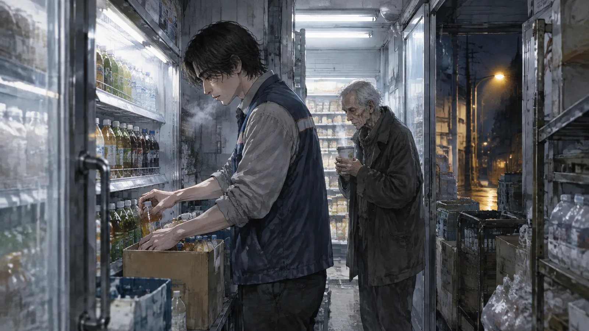
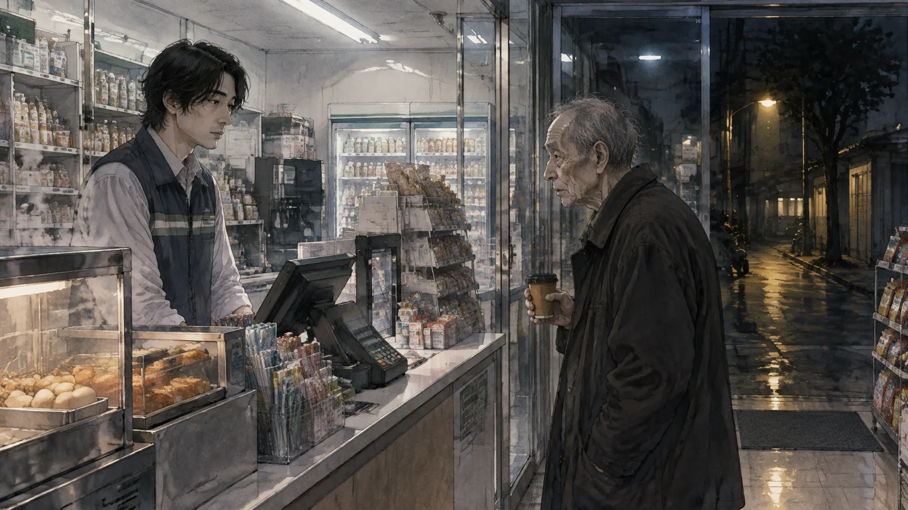
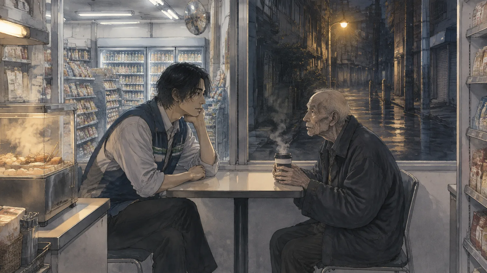
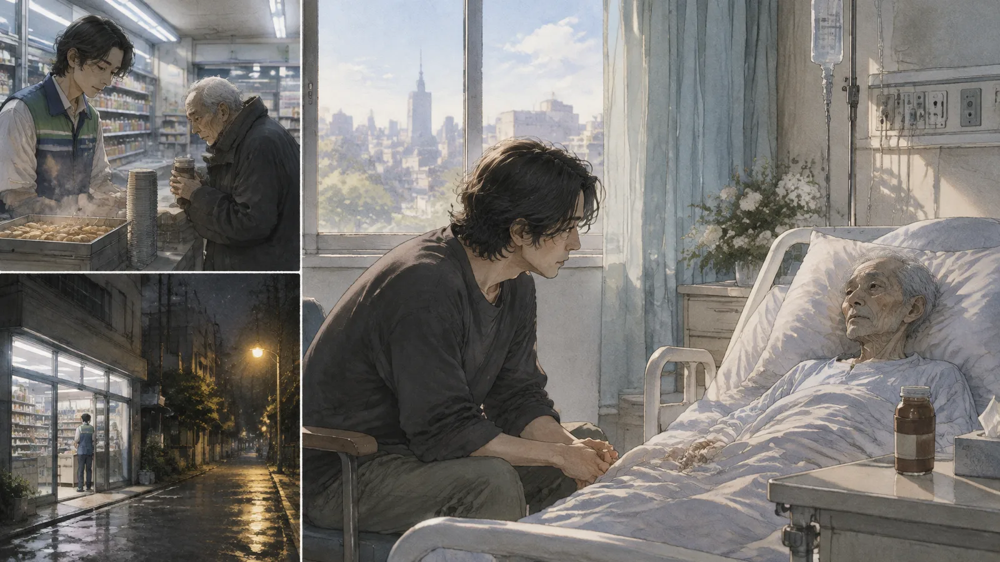
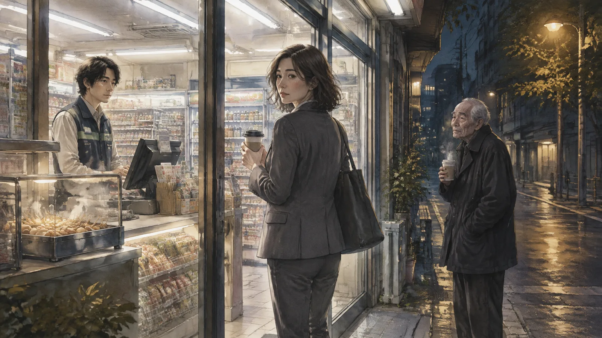
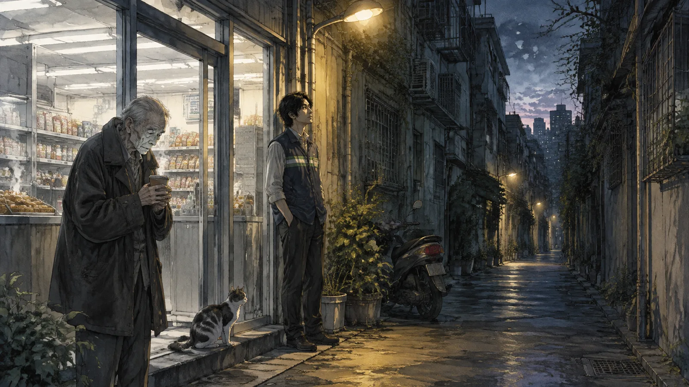

第一章補貨
阿肯每天晚上十一點上班，第一件事是補貨。
飲料櫃最先。他推開冷藏室的後門，走進零下四度的空間裡，把一箱一箱的飲料從架子上搬下來，一瓶一瓶塞進貨架的後面，讓前面被拿走的位置重新填滿。茶，水，咖啡，啤酒。然後是泡麵，餅乾，零食。然後是關東煮，要換湯，要洗鍋。然後是報紙，凌晨三點送來，要拆，要上架。然後是麵包，五點送來。然後天亮了，早班的來了，他下班。

第二天晚上十一點，貨架又空了。他再補一次。
他做了四年。在一間二十四小時便利商店，台北東區的一條巷子裡，白天很多人，晚上很少。他三十一歲，大學念到一半沒念了，做過幾個工作，都沒有做久。這個做久了，因為晚上沒有人管他。
有一天凌晨兩點，一個老先生走進來。
七十幾歲，很瘦，穿一件太大的外套，拿了一罐熱咖啡，在收銀台前面站了很久，不付錢。阿肯等著。老先生看著他，忽然說：

「你知道西西弗嗎？」
阿肯不知道。
「希臘的。」老先生說，「被神罰推一顆石頭上山。推到山頂，石頭滾下來。再推。永遠。」
阿肯看了看貨架。
「跟我一樣。」他說。
老先生笑了。他付了錢，走了。
第二章老師
老先生叫程恆，是退休的高中老師，教公民，教了三十五年。他住在巷子裡的一棟老公寓，一個人。他每天凌晨兩點來買一罐熱咖啡，因為他睡不著。
阿肯是慢慢知道這些的。程恆每天來，每天在收銀台前面站一會兒，講幾句話。一開始是天氣，後來是別的。他講希臘人，講一個叫卡繆的法國人，講「荒謬」。阿肯不太懂，可是他聽。凌晨兩點沒有別的事可以做。
「卡繆說，人生最重要的哲學問題只有一個。」程恆有一天說，「就是要不要自殺。」
阿肯正在補關東煮的湯。他停下來。
「這是什麼意思？」
「意思是，如果人生沒有意義，你為什麼還要活？」程恆說，「如果每天推石頭，推上去它就滾下來，那你為什麼還要推？」
「不推會怎麼樣？」
「不推就是那個問題的答案。」
阿肯把湯倒進鍋裡。他想了一下。
「那卡繆推不推？」
「推。」程恆說，「他說，要想像西西弗是快樂的。」
「為什麼快樂？」
「因為石頭是他的。」程恆說，「神罰他推，可是推的時候，石頭在他手裡。那一刻是他的。神管不到。」
阿肯看著他。老先生的手在抖，拿咖啡的時候會灑出來一點。他的臉很白，白得不像睡不著，像別的。
「程老師，」他說，「你為什麼睡不著？」
程恆沒有立刻回答。他喝了一口咖啡。
「我在推石頭。」他說，「推了三十五年。石頭是三十五年來每一屆的學生。我教他們什麼是正義，什麼是公民，什麼是好的社會。然後他們畢業，石頭滾下來，下一屆又來。我推了三十五年。」
「然後呢？」
「然後我退休了。」程恆說，「沒有石頭了。」
第三章貨架
那個星期，阿肯開始注意貨架。
不是補貨的時候。是補完以後。他站在貨架前面，看著他排好的東西——每一瓶飲料標籤朝前，每一包泡麵的邊對齊，關東煮的湯清的，報紙疊得整齊。他看了很久。
然後早班的人來，客人來，貨架亂了，空了。第二天晚上他再排一次。
他以前不覺得這有什麼。這是工作，做完，領錢。可是程恆講了西西弗以後，他開始想：這顆石頭是我的嗎？
他想，不是。貨是店的。架子是店的。錢是店的。他只是一雙手。他推的石頭不是他的，是老闆的，是連鎖總部的，是那些他從來沒見過的、在一棟大樓裡決定「這個月推什麼飲料」的人的。
他推石頭，石頭滾下來，他再推。可是石頭連他的都不是。
「那你為什麼推？」程恆問。那天凌晨兩點，他坐在店裡唯一的一張桌子旁邊，阿肯坐在對面——沒有客人，他可以坐一下。

「因為要吃飯。」
「這是一個理由。」程恆說，「不是一個答案。」
「有什麼差別？」
「理由是別人給你的。答案是你自己找的。」程恆說，「『要吃飯』是理由。全世界的人都要吃飯。可是你為什麼在這裡吃飯，為什麼是這間店，為什麼是晚上，為什麼是四年——那個是答案。」
阿肯想了很久。
「因為晚上沒有人。」他說，「我可以自己一個人排貨架。排好的時候，很整齊。我喜歡那個。」
程恆看著他。
「那就是你的石頭。」他說。
第四章石頭滾下來
程恆在十一月的一個晚上沒有來。
阿肯等到三點，他沒有來。等到五點，沒有來。早班的人來了，他下班，走到巷子裡那棟老公寓前面，站了一會兒。他不知道是幾樓。他走了。
第二天也沒有來。第三天。
第四天，一個女人走進店裡。五十歲左右，眼睛紅腫。她說她是程恆的女兒。她說她父親住院了，肺癌，末期，之前就知道了，一直沒有告訴任何人。她說父親在醫院裡一直講一個便利商店的年輕人，說要她來看看。
「他說你會問一個問題。」女人說，「他叫我告訴你答案。」
「什麼問題？」
「他說你會問：石頭滾下來以後，推的人去哪裡了。」
阿肯站在收銀台後面，看著她。
「答案是什麼？」
女人的眼淚流下來。
「他說，」她說，「推的人走下山，去撿石頭。那段路，是唯一沒有人管的。」
第五章走下山
阿肯去了醫院。
程恆躺在病床上，很小，比在店裡看起來小很多。他的眼睛是閉的。女兒說他大部分時間在睡。阿肯在床邊坐下來，坐了很久。

程恆醒了一次。他看到阿肯，眼睛動了一下。
「補貨了嗎？」他說，聲音很小。
「補了。」
「整齊嗎？」
「整齊。」
程恆笑了。很淡的笑。
「卡繆說，」他說，說得很慢，一個字一個字，「要想像西西弗是快樂的。我教了三十五年，我不確定我快不快樂。我推了那麼多石頭，我不知道有沒有一顆推上去以後留在那裡。」
「有。」阿肯說。
程恆看著他。
「我。」阿肯說，「我不是你的學生。可是我在。你講的那些，我聽了。我現在排貨架的時候會想。這是你推上去的。它沒有滾下來。」
程恆很久沒有說話。他的眼睛濕了。
「那就好。」他說，「一顆就夠了。」
他閉上眼睛。過了一會兒，他又睜開。
「阿肯。」
「嗯。」
「走下山的路，」他說，「不要跑。慢慢走。看看風景。那是你的。」
第六章學生
程恆的女兒帶了一個人來店裡。
四十歲左右的女人，穿套裝，看起來剛下班。她說她是程恆的學生，一九九九年畢業的。她說她在醫院聽程恆講起這間店，講起一個晚班的年輕人，「他說你問了一個很好的問題」。

「我沒有問什麼。」阿肯說，「我只是說跟我一樣。」
女人笑了。
「他二十五年前跟我們講西西弗。」她說，「高二，公民課。全班都在睡覺。我沒有睡，因為我那時候家裡出事，我爸的公司倒了，我每天回家都覺得沒有意義。他講完那堂課，我留下來問他：老師，那石頭到底要推到什麼時候？」
「他怎麼說？」
「他說，推到妳發現妳不是在推石頭的時候。」女人說，「我不懂。他說，妳現在覺得妳在推石頭，是因為妳看著石頭。妳看妳的手，看妳的腳，看山。石頭只是妳手上的一個東西。」
她在收銀台前面站了一會兒。
「我後來做了社工。」她說，「做了十八年。每一個案子都是一顆石頭，推上去，滾下來。可是我沒有看石頭。我看我的手。」
她買了一罐熱咖啡。走到門口，她回頭。
「他說你是他最後一顆石頭。」她說，「他說這顆推上去以後，他就不用再推了。」
阿肯站在收銀台後面。貨架是整齊的。
「那他推上去了嗎？」他問。
女人看著他，看了很久。
「你還在這裡。」她說，「不是嗎？」
第七章凌晨兩點
程恆在十二月走的。
阿肯沒有去告別式。他不知道要用什麼身份去。他不是家人，不是學生，不是朋友。他是一個便利商店的店員。他在凌晨兩點的時候，把一罐熱咖啡放在收銀台上，放了十分鐘，然後放回去。
之後他還是每天晚上十一點上班。補貨。飲料，泡麵，關東煮，報紙，麵包。天亮，下班。第二天再來。
可是有一件事不一樣了。
他補完貨以後，會站在貨架前面，看一會兒。然後他會走出店門，站在巷子裡。凌晨三點，沒有人，路燈是黃的，遠處有一台垃圾車的聲音。他站三分鐘。不做什麼。就站著。

那是走下山的路。
有一天一個新來的早班問他：「你每天早上為什麼站在外面？」
「看風景。」阿肯說。
「這裡有什麼風景？」
阿肯看了看巷子。老公寓，鐵窗，一台停在路邊的機車，一隻貓。
「有。」他說。
尾聲
阿肯後來做了店長。
不是因為他想。是因為原本的店長走了，總部問他要不要，他說好。做店長要管白天，可是他跟總部說他要繼續做晚班，總部說隨便你。
他招了一個新的晚班。二十四歲，大學剛畢業，不知道要做什麼。第一天晚上，阿肯教他補貨。飲料櫃最先。標籤朝前。泡麵的邊對齊。
「為什麼要對齊？」年輕人問，「明天早上就亂了。」
阿肯想了一下。
「你知道西西弗嗎？」他說。
年輕人不知道。
阿肯講了。講石頭，講山，講滾下來，講再推。講一個法國人說要想像他是快樂的。講一個高中老師說走下山的路是自己的。他講得不太好，沒有程恆講得好。可是他講了。
年輕人聽完，看著貨架。
「所以我們是西西弗？」
「對。」
「那石頭是我們的嗎？」
阿肯把一包泡麵的邊對齊。
「石頭是店的。」他說，「對齊是你的。」
年輕人想了很久。然後他拿起下一包泡麵，把邊對齊。
凌晨三點，報紙來了。阿肯走出店門，站在巷子裡。路燈是黃的。那隻貓還在。
他站了三分鐘。
（完）
留言板
看不懂、想補充、發現錯誤都歡迎留言；填個暱稱就能發。